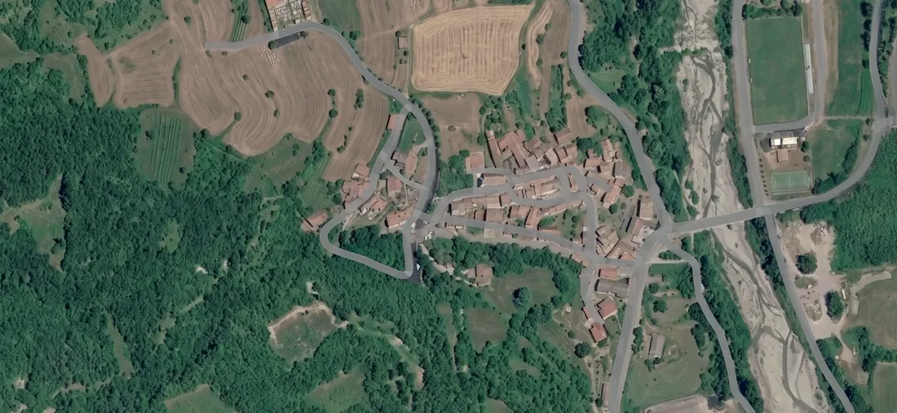

Percorso
La strada.
Il concept non nasce da un simbolo, ma da un tragitto reale e mentale: dalla valle al borgo, dalla vigna alla cantina, dal lavoro alla bottiglia.



01
Nome
StraCrösa viene dal dialetto locale: è il nome con cui gli abitanti hanno sempre chiamato la strada verso Casanova Staffora.
02
Luogo
La strada non è decorazione. È il legame tra valle e borgo, tra paesaggio e comunità, tra origine e destinazione.
03
Metodo
Il percorso difficile diventa metodo produttivo: lavoro manuale, basse rese, fermentazioni spontanee, nessuna scorciatoia.
04
Vino
La bottiglia è il punto di arrivo: prima viene il territorio, poi il vitigno, infine la firma StraCrösa.